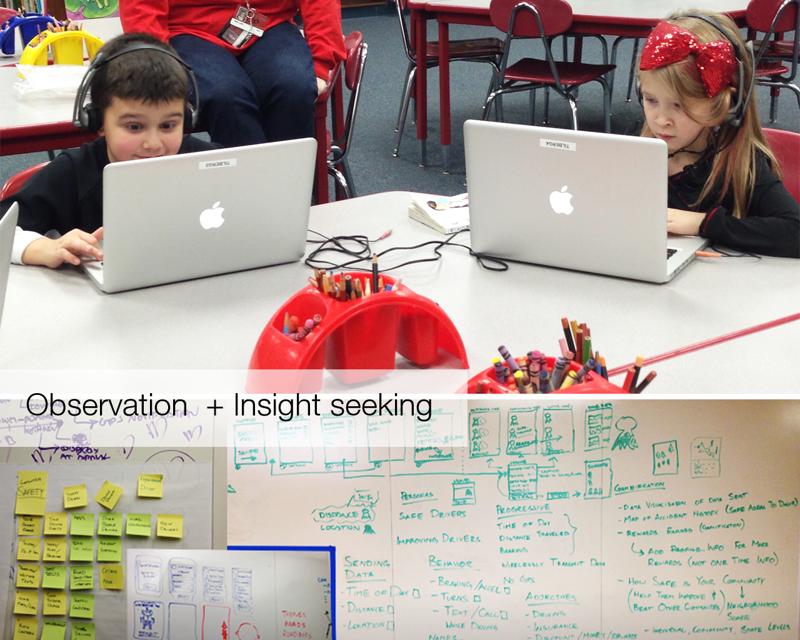
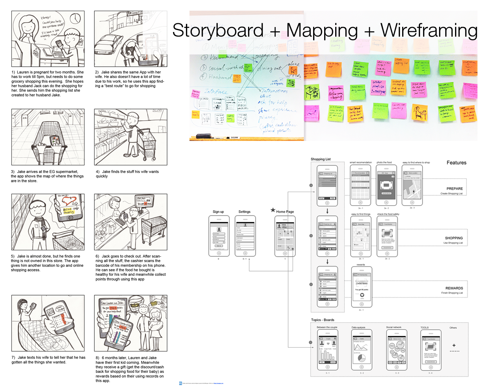
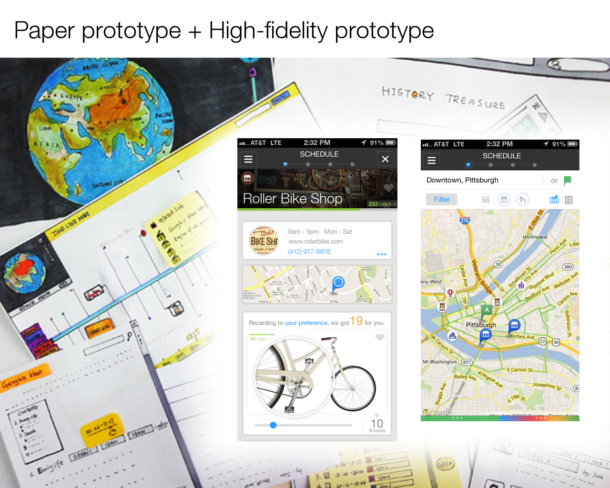
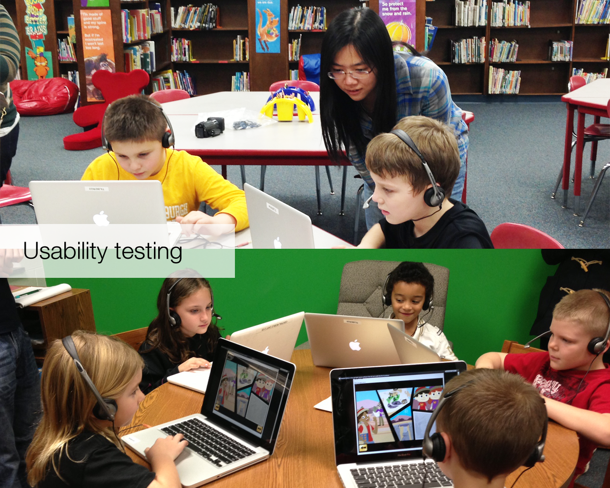
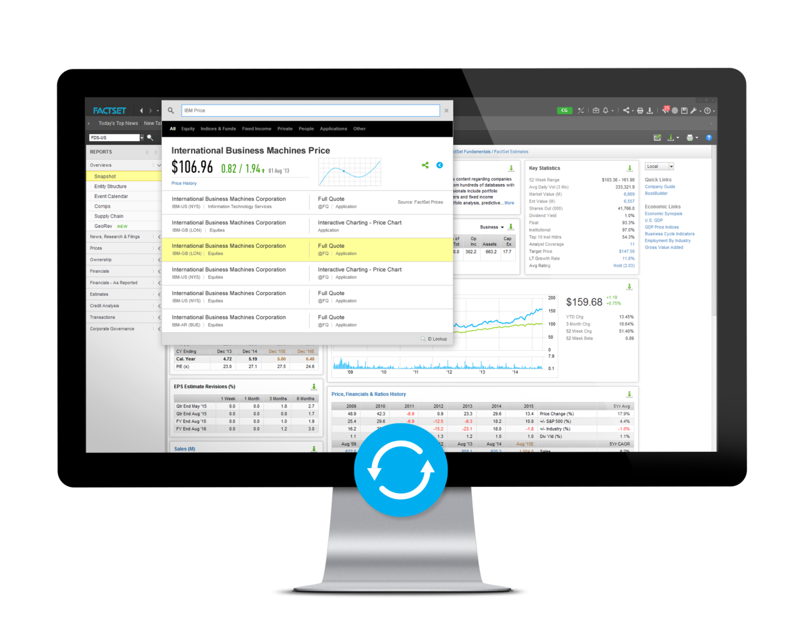
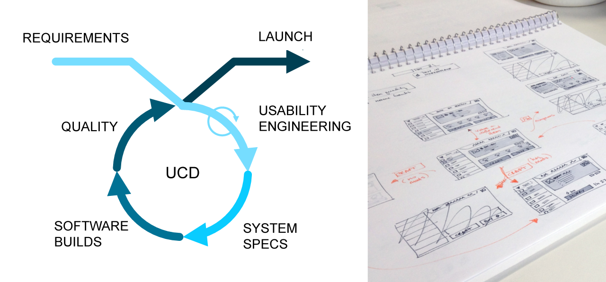

"D" Thinking & Process
For me, "Design Thinking" is a mindset of "Product Design thinking". It's not about purely design a set of features, it's more about thinking things as a whole - designing user-centered experience (product) aligned with business vision and strategy.
Product Design encompasses the entire range of research, concept, and execution and testing of a product. For instance, how to *define* the problem, what's the insights behind, and how to find the appropriate solution that meets the target audience's needs. There are 3 things I feel the most important while doing product design:
- Empathy
- Problem Solving
- Systematic & Detail-Oriented thinking
Product Design mindset has been influencing me all the time when I doing various design projects, either for consumer products or for enterprise's.
In my mind, design process does vary depending on what kind of project you are working on. Due to my personal working experience, the design process I usually go through are in 2 aspects:
1. For consumer product:
Research
 Darpa project (top) cart sort in for insight seeking in Project robots (bottom)- need finding
- observation
- Interview
- market research
- sopportunity & insight
empathize users and "define" the problem
Ideation
- brainstorming/ bodystorming
- personas & scenarios
- storyboard
- IA
- wireframes
discover the insights and find the creative solution
Prototype
- paper/ rapid prototype
- high-fidelity prototype
specify the solution and build a good communicating way
Test
- usability testing
- usability heuristics
- usability assessment Methods
obtain feedback from users
Iteration
go deep and specific, overall, improve the product.
* iteration will include the former 4 as a circle.
Iteration, interation, iteration...
2. For enterprise product:
Enterprise product usually -
- has a lot of users,
- focus on system design,
- whose users care about performance/speed/consistency.
So the Process is not linear. Things are mash-ups, sometimes in a circle):
project research
- requirements translation (kickoff meeting)
- testing current or related product
- needing finding: users' habits, working space, user's profession
- design with stakeholders or clients. getting more people (inner and outside) involved and get input as much as possible - collaborative meetings
- Involving UX researchers
understand user's goal and business goal
Solution ideation
- sketch (work collaboratively)
- use cases
- IA
- workflow
seek the most efficient way to assist users to accomplish the task
wireframing
- systematic thinking
- visualize users's needs and business goal
- take possibilities of technology into account.
visualize the solution for user's needs and business goal
Test
- Heuristic evaluation
- Usability testing
- feasibility testing
- market research
get feedback for iteration as to better deliver the product
Iteration
keep updating the design solution regarding the feedback from PD and UX researches.
* Iteration mostly happens at solution ideation and wireframing stages.